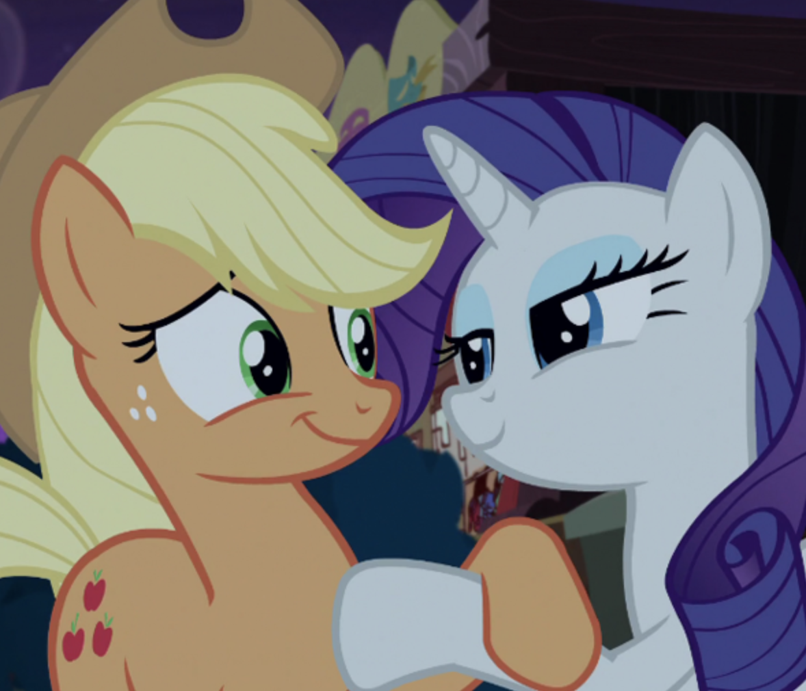
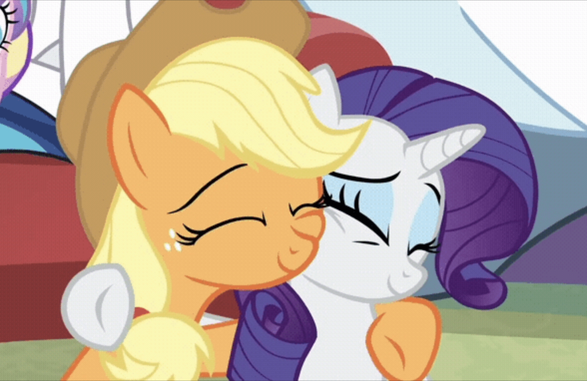

Art 74 Portfolio - Caitlyn Vu
Data Moshing
 |
This is the first glitch created for the project. Audacity was used in order to data mosh the image. I enjoyed how this image came to be since it creates a chaotic atmosphere, which is related to a character name Discord. The characters are still recognizable and the data moshing gives the image a different vibe. Below is the original image.  |
This is the second glitch created for the project, also using Audacity to data mosh the image. Within both works, I tried to utilize the rainbow in hopes to represent their romantic connection. This one shows more than the first. Regardless, both have elements of all sorts of colors. Below is the original image.  |
 |